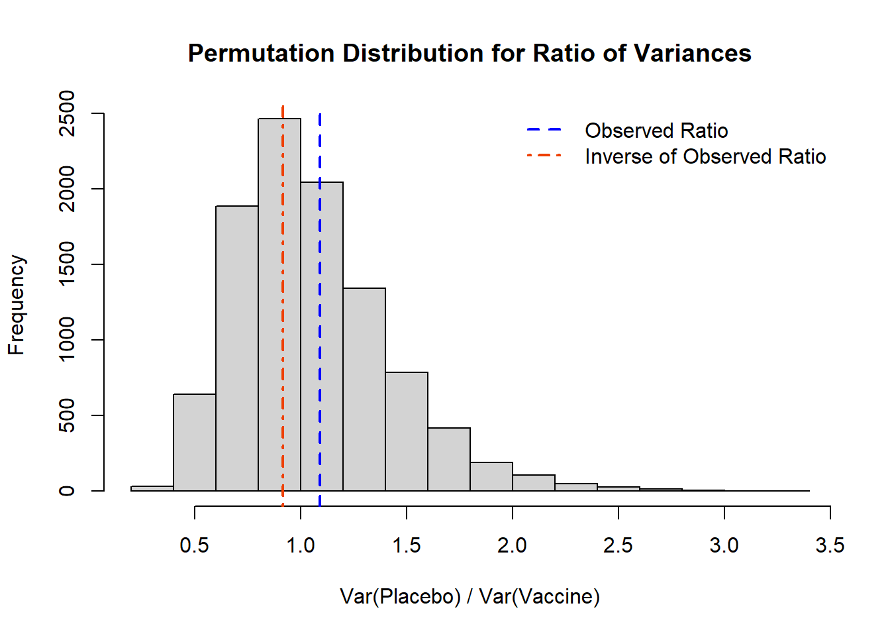
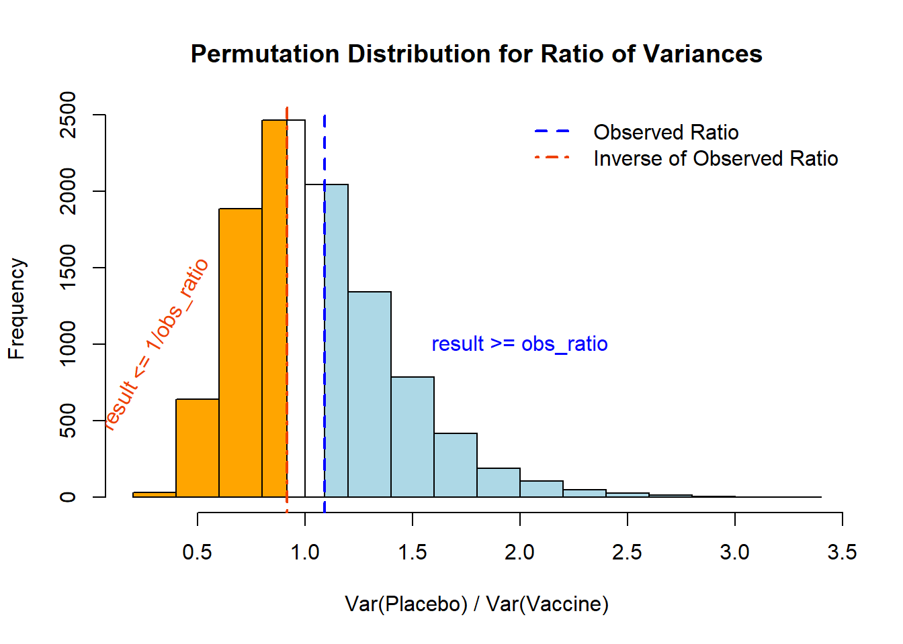
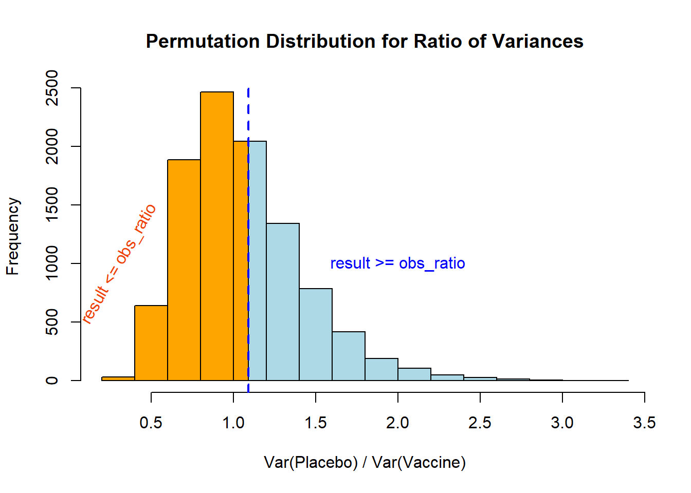

This page is part of the University of Colorado-Anschutz Medical Campus’ BIOS 6618 Recitation collection. To view other questions, you can view the BIOS 6618 Recitation collection page or use the search bar to look for keywords.
Permutation Test p-values
Let’s revisit the example from lab on Tuesday with a comparison of a vaccine for Celiac disease to more explicitly walk through how we calculate the p-values and what happens if something goes wrong. We assumed under the null scenario that the placebo group’s tissue transglutaminase IgA antibody (tTG-IgA) distribution was \(Y_P \sim \text{Gamma}(\text{shape}=10,\text{scale}=3)\) and that the treatment group’s tTG-IgA was \(Y_T \sim \text{Gamma}(\text{shape}=10,\text{scale}=\sqrt{18})\).
obs_ratio <-var(placebo)/var(vaccine) # calculate the ratio of the variancesobs_ratio
[1] 1.090336
Code
B <-10^4-1#set number of times to complete permutation samplingresult <-numeric(B)nP <-length(placebo)obs_ratio <-var(placebo)/var(vaccine) # calculate the ratio of the variancesset.seed(612) #set seed for reproducibilitypool_dat <-c(placebo, vaccine)for(j in1:B){ index <-sample(x=1:length(pool_dat), size=nP, replace=F) placebo_permute <- pool_dat[index] vaccine_permute <- pool_dat[-index] result[j] <-var(placebo_permute) /var(vaccine_permute)}# Histogramhist( result, xlab='Var(Placebo) / Var(Vaccine)', main='Permutation Distribution for Ratio of Variances')abline( v=obs_ratio, lty=2, col='blue', lwd=2)abline( v=1/obs_ratio, lty=4, col='orangered2', lwd=2)legend('topright', lty=c(2,4), lwd=c(2,2), col=c('blue','orangered2'), legend=c('Observed Ratio','Inverse of Observed Ratio'), bty='n')

We see in the histogram above that we have both the observed ratio (obs_ratio) and the inverse of our observed ratio (1/obs_ratio) indicated by the vertical lines. From our data we can both calculation the proportion of our permutation sample that is \(\leq\) or \(\geq\), and how that corresponds to our permutation test p-value.
First, let’s focus on the calculation of our observed ratio. We know that for a permutation test p-value we need to calculate the proportion that is as or more extreme than what we observed. Visually, this would represent:
Code
# Calculate histogram, but do not draw itmy_hist <-hist(result , plot=F)# Color vectormy_color=ifelse(my_hist$breaks > obs_ratio, 'lightblue' , ifelse (my_hist$breaks < (1/obs_ratio)-0.2, 'orange','white' ))# Final plotplot(my_hist, col=my_color, border=T, xlab='Var(Placebo) / Var(Vaccine)', main='Permutation Distribution for Ratio of Variances')rect(xleft=0.8, ybottom=0, xright=1/obs_ratio, ytop=2461, col='orange')rect(xleft=obs_ratio, ybottom=0, xright=1.2, ytop=2042, col='lightblue')abline( v=obs_ratio, lty=2, col='blue', lwd=2)abline( v=1/obs_ratio, lty=4, col='orangered2', lwd=2)legend('topright', lty=c(2,4), lwd=c(2,2), col=c('blue','orangered2'), legend=c('Observed Ratio','Inverse of Observed Ratio'), bty='n')text(x=2, y=1000, 'result >= obs_ratio', col='blue')text(x=0.3, y=1000, 'result <= 1/obs_ratio', col='orangered2', srt=60)

Numerically, these values are:
Code
# The correct calculations((sum(result >= obs_ratio) +1)/(B+1))
[1] 0.3992
Code
((sum(result <= (1/obs_ratio)) +1)/(B+1))
[1] 0.4009
For the two-sided p-value we then double our largest value to use for our conclusion:
We see in this case we have a nonsensical p-value that is larger than 1!! This helps us realize we may need to double check our observed statistic and how it relates to our distribution.
One-Sided p-value Calculation
In the case of a one-sided p-value the approach is a little more straight forward, but we still need to consider the context of our problem!!
Code
# Calculate histogram, but do not draw itmy_hist <-hist(result , plot=F)# Color vectormy_color=ifelse(my_hist$breaks > obs_ratio, 'lightblue' , 'orange' )# Final plotplot(my_hist, col=my_color, border=T, xlab='Var(Placebo) / Var(Vaccine)', main='Permutation Distribution for Ratio of Variances')rect(xleft=obs_ratio, ybottom=0, xright=1.2, ytop=2042, col='lightblue')abline( v=obs_ratio, lty=2, col='blue', lwd=2)text(x=2, y=1000, 'result >= obs_ratio', col='blue')text(x=0.3, y=1000, 'result <= obs_ratio', col='orangered2', srt=60)

Here our interpretation then depends on our a priori specified null hypothesis (i.e., that we expect the ratio to be larger than 1 or small than 1 based on our context).
Numerically, these values are:
Code
# The correct calculations((sum(result >= obs_ratio) +1)/(B+1)) # H0 that the expected ratio > 1
[1] 0.3992
Code
((sum(result <= obs_ratio) +1)/(B+1)) # H0 that the expected ratio < 1
[1] 0.6009
Source Code
---title: "Permutation Test p-values"author: name: Alex Kaizer roles: "Instructor" affiliation: University of Colorado-Anschutz Medical Campustoc: truetoc_float: truetoc-location: leftformat: html: code-fold: show code-overflow: wrap code-tools: true---```{r, echo=F, message=F, warning=F}library(kableExtra)library(dplyr)```This page is part of the University of Colorado-Anschutz Medical Campus' [BIOS 6618 Recitation](/recitation/index.qmd) collection. To view other questions, you can view the [BIOS 6618 Recitation](/recitation/index.qmd) collection page or use the search bar to look for keywords.# Permutation Test p-valuesLet's revisit the example from lab on Tuesday with a comparison of a vaccine for Celiac disease to more explicitly walk through how we calculate the p-values and what happens if something goes wrong. We assumed under the null scenario that the placebo group's tissue transglutaminase IgA antibody (tTG-IgA) distribution was $Y_P \sim \text{Gamma}(\text{shape}=10,\text{scale}=3)$ and that the treatment group's tTG-IgA was $Y_T \sim \text{Gamma}(\text{shape}=10,\text{scale}=\sqrt{18})$.```{r, class.source = 'fold-show'}set.seed(612)placebo <-rgamma(n=50, shape=10, scale=3)vaccine <-rgamma(n=50, shape=5, scale=sqrt(18))var(placebo) # calculate the sample variancesvar(vaccine) # calculate the sample variancesobs_ratio <-var(placebo)/var(vaccine) # calculate the ratio of the variancesobs_ratioB <-10^4-1#set number of times to complete permutation samplingresult <-numeric(B)nP <-length(placebo)obs_ratio <-var(placebo)/var(vaccine) # calculate the ratio of the variancesset.seed(612) #set seed for reproducibilitypool_dat <-c(placebo, vaccine)for(j in1:B){ index <-sample(x=1:length(pool_dat), size=nP, replace=F) placebo_permute <- pool_dat[index] vaccine_permute <- pool_dat[-index] result[j] <-var(placebo_permute) /var(vaccine_permute)}# Histogramhist( result, xlab='Var(Placebo) / Var(Vaccine)', main='Permutation Distribution for Ratio of Variances')abline( v=obs_ratio, lty=2, col='blue', lwd=2)abline( v=1/obs_ratio, lty=4, col='orangered2', lwd=2)legend('topright', lty=c(2,4), lwd=c(2,2), col=c('blue','orangered2'), legend=c('Observed Ratio','Inverse of Observed Ratio'), bty='n')```We see in the histogram above that we have both the observed ratio (`obs_ratio`) and the inverse of our observed ratio (`1/obs_ratio`) indicated by the vertical lines. From our data we can both calculation the proportion of our permutation sample that is $\leq$ or $\geq$, and how that corresponds to our permutation test p-value.First, let's focus on the calculation of our *observed ratio*. We know that for a permutation test p-value we need to calculate the proportion that is *as or more extreme* than what we observed. Visually, this would represent:```{r, class.source = 'fold-hide'}# Calculate histogram, but do not draw itmy_hist <-hist(result , plot=F)# Color vectormy_color=ifelse(my_hist$breaks > obs_ratio, 'lightblue' , ifelse (my_hist$breaks < (1/obs_ratio)-0.2, 'orange','white' ))# Final plotplot(my_hist, col=my_color, border=T, xlab='Var(Placebo) / Var(Vaccine)', main='Permutation Distribution for Ratio of Variances')rect(xleft=0.8, ybottom=0, xright=1/obs_ratio, ytop=2461, col='orange')rect(xleft=obs_ratio, ybottom=0, xright=1.2, ytop=2042, col='lightblue')abline( v=obs_ratio, lty=2, col='blue', lwd=2)abline( v=1/obs_ratio, lty=4, col='orangered2', lwd=2)legend('topright', lty=c(2,4), lwd=c(2,2), col=c('blue','orangered2'), legend=c('Observed Ratio','Inverse of Observed Ratio'), bty='n')text(x=2, y=1000, 'result >= obs_ratio', col='blue')text(x=0.3, y=1000, 'result <= 1/obs_ratio', col='orangered2', srt=60)```Numerically, these values are:```{r}# The correct calculations((sum(result >= obs_ratio) +1)/(B+1))((sum(result <= (1/obs_ratio)) +1)/(B+1))```For the two-sided p-value we then double our largest value to use for our conclusion:```{r}2*max(((sum(result >= obs_ratio) +1)/(B+1)), ((sum(result <= (1/obs_ratio)) +1)/(B+1)))```If we happen to forget to check the order of our problem and we flip the direction of our inequalities we arrive at:```{r}# The incorrect calculations((sum(result <= obs_ratio) +1)/(B+1))((sum(result >= (1/obs_ratio)) +1)/(B+1))2*max( ((sum(result <= obs_ratio) +1)/(B+1)), ((sum(result >= (1/obs_ratio)) +1)/(B+1)))```We see in this case we have a nonsensical p-value that is larger than 1!! This helps us realize we may need to double check our observed statistic and how it relates to our distribution.## One-Sided p-value CalculationIn the case of a one-sided p-value the approach is a little more straight forward, *but we still need to consider the context of our problem!!*```{r, class.source = 'fold-hide'}# Calculate histogram, but do not draw itmy_hist <-hist(result , plot=F)# Color vectormy_color=ifelse(my_hist$breaks > obs_ratio, 'lightblue' , 'orange' )# Final plotplot(my_hist, col=my_color, border=T, xlab='Var(Placebo) / Var(Vaccine)', main='Permutation Distribution for Ratio of Variances')rect(xleft=obs_ratio, ybottom=0, xright=1.2, ytop=2042, col='lightblue')abline( v=obs_ratio, lty=2, col='blue', lwd=2)text(x=2, y=1000, 'result >= obs_ratio', col='blue')text(x=0.3, y=1000, 'result <= obs_ratio', col='orangered2', srt=60)```Here our interpretation then depends on our *a priori* specified null hypothesis (i.e., that we expect the ratio to be larger than 1 or small than 1 based on our context).Numerically, these values are:```{r}# The correct calculations((sum(result >= obs_ratio) +1)/(B+1)) # H0 that the expected ratio > 1((sum(result <= obs_ratio) +1)/(B+1)) # H0 that the expected ratio < 1```